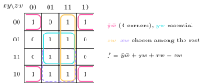

fewer literals; the minimal SOP takes all essential prime implicants and covers the remaining ones with as few primes as possible, don't-cares counting as 1 when growing groups and as 0 when choosing them.
fewer literals; the minimal SOP takes all essential prime implicants and covers the remaining ones with as few primes as possible, don't-cares counting as 1 when growing groups and as 0 when choosing them.Method
- Draw the map: rows and columns numbered in Gray code (00, 01, 11, 10), so neighbours differ in one bit; the first and last column (and row) are neighbours too — the map is a torus.
- Fill it from the truth table (careful: cell is the third column, not the fourth).
- Prime implicants: from each 1 grow the largest rectangle of cells containing only ones (and don't-cares). A group of
 cells is a product of literals: write the variables that are constant across the group.
cells is a product of literals: write the variables that are constant across the group. - Essential primes: a prime that is the only one covering some 1. They are in every minimal cover.
- Cover the ones still uncovered with the fewest, largest primes (choose to minimize overlaps). Covering a 1 twice is fine; using a non-prime group is never minimal.
POS: group the zeros the same way and write each group as a sum with polarity reversed (a variable constant at 0 appears plain): .
Don't-cares ( , inputs that never occur or whose output does not matter): treat them as 1 to enlarge primes, as 0 when deciding which primes are needed — a prime is never essential because of a don't-care, and no prime is added to cover only don't-cares.
Five variables: two 4-variable maps for and (Shannon on
, inputs that never occur or whose output does not matter): treat them as 1 to enlarge primes, as 0 when deciding which primes are needed — a prime is never essential because of a don't-care, and no prime is added to cover only don't-cares.
Five variables: two 4-variable maps for and (Shannon on  ), imagined one on top of the other: same cell in both maps = adjacent. Six: four maps. Beyond, split with Shannon.
), imagined one on top of the other: same cell in both maps = adjacent. Six: four maps. Beyond, split with Shannon.
Picture

 , complete the minimal cover .
, complete the minimal cover .The four corners are one group: rows 00 and 10 are adjacent, and so are columns 00 and 10.
Example
The map above has six primes, all of four cells: , , , , , . Essential: (only cover of cell 0000) and (only cover of 0101). Still uncovered: 0011 and 1001. Cell 0011 is covered by or ; cell 1001 by or ; any choice gives 4 terms, 8 literals, e.g. .
Wrong answer: — it is a cover, but with non-prime groups (10 literals).
Don't-care example (BCD input, codes 1010–1111 never occur): segment  of a 7-segment decoder drops from 14 to 6 literals,
of a 7-segment decoder drops from 14 to 6 literals,  .
.
Intuition
The map is the adjacency rule made visible: each doubling of a rectangle erases one variable, the one that changes inside it.
Pitfall
Reading columns in binary order (00, 01, 10, 11) breaks adjacency and produces wrong groups. Groups must be rectangles of a power of two cells: an L-shape of three ones is two overlapping pairs, not one term. In a 5-variable map with columns numbered 000 001 011 010 100 101 111 110 the two middle columns (010 and 100) are not adjacent.